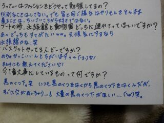

はぁーーーい ♪
こんちわぁ〜ん (*^З^*)
ろってぃ−だよん.
昨日はっっ、、))))
こんなに綺麗な
おばちゃま♪と
あ !!!!!! ちゃうちゃう間違った
怒られる (笑) (゜Д゜)))}}ビクビク
「二十歳が一番綺麗な時
おねぇたま みさみさ♪」と
←(キャッチフレーズみたいなった 笑)
美容院に行きましたぁ〜(/*´▽`)/
この写メは 美容院ついて
待ってる間にとったんよん。
まひろが美容院
そろそろ行った方が
いいんかなぁ〜?って悩んでたら
みさみさ♪が紹介してくれました/
ありがとん,みさみさ )))
まひろは、
カラー、カット、トリートメント
をしました !
久しぶりに色見を
じゃっかしかえたんだけど
明るさは特に変えてないよ/
カットは 5センチ?切ったよ♪
質問でよく
『ろてぃの髪色に
したいんだけど
何て言えばいいの?』
ってあるんだけど
まひろは
9〜10トーン位の明るさだよ ((^^)
仕上がりは次回のblogに
貼りますん !
そ−だそ−だ !
板野友美さんが
目の前にいて
ちょっくらドキドキしました(> <)
美容院終わってから
1時間だけ空いてたから
みさみさ♪が好きな
カフェへ〜〜
いいねぇ〜
そのスプーンとフォークを
パスタに突っ込む感じ ☆
美味しかったよん.
早く日曜日にならないかな?
ではでは、私 お風呂に入ります/
いってきーー
のし。 rottyより
